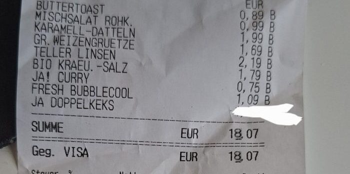
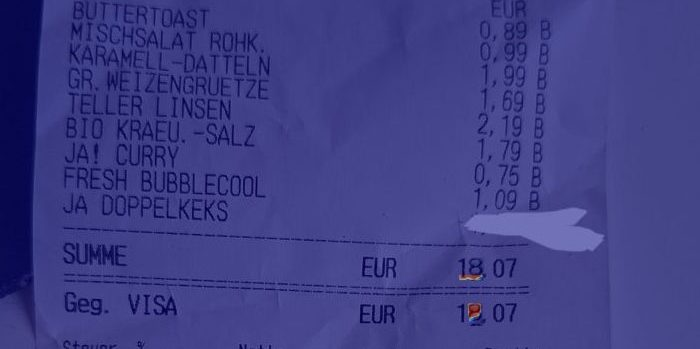
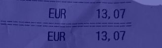
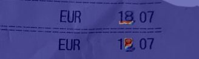
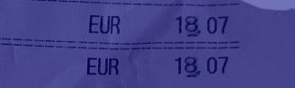

Case 1 · receipt
One digit changed: total 13,07 → 18,07
✓ Caught by the document model"3" replaced by an "8" copied from another price, in both totals.
- DTDboth edited digits marked exactly (peak 1.00); untouched receipt stays clean
- TruFormissed (0.12): two digits are ~0.1% of the image
- ELAfound both digits, but cannot be trusted alone
- VerdictHigh risk, 88%